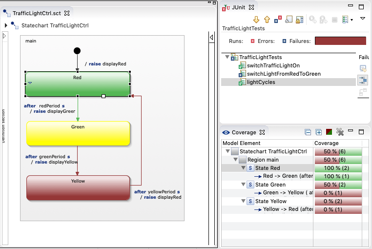

Exercise 3
Traffic Light Testing
How do we make sure that the traffic light works according to the defined requirements?
You will learn how to define tests for statecharts.

Inspecting and running the prepared tests.
This exercise includes the traffic light statechart from the previous exercises.
Additionally it includes prepared SCTUnit test cases which must be extended. First take a look at the
test cases and the execute them.
- Open the sctunit file TrafficLightTests.sctunit by double-clicking the
file in the project explorer.
- Take a look at the existing tests.
- Execute the tests: witin the editor right-click and choose 'Run As > SCT Unit'
from the context menu.
- The testing perspective should be activated and you should see the Junit
and Coverage views on the right (see image above).
- Select an entry from the coverage view to visualize the coverage information on the statechart.
Complete the tests
The Junit and Coverage views indicate that:
- The tests are incomplete because the coverage is not at 100%.
- There are failing tests.
The goals for this exercise are:
- Fix the broken tests. Be aware that the statechart and the test cases may have failures.
- Add further tests cases to cover all requirements.
- Try to reach 100% coverage.
These are the requirements:
- R1: three differently coloured lights: red (R), green (G), yellow (Y)
- R2: at most one light is on at any point in time
- R3: at system start-up, the red light is on
- R4: cycles through red on, green on, and yellow on
- R5: red is on for 60s, green is on for 55s, yellow is on for 5s